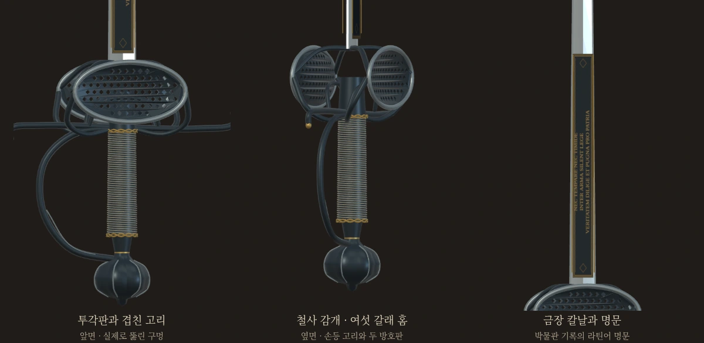
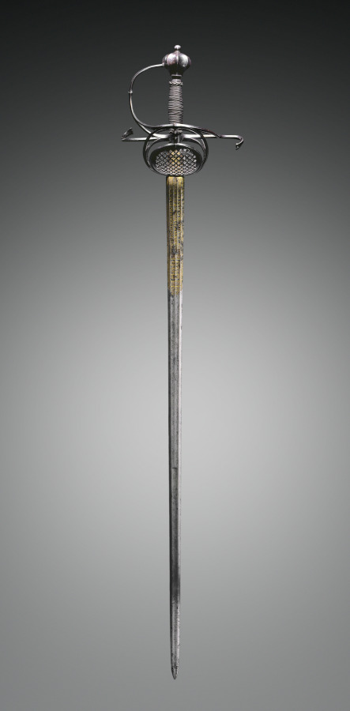
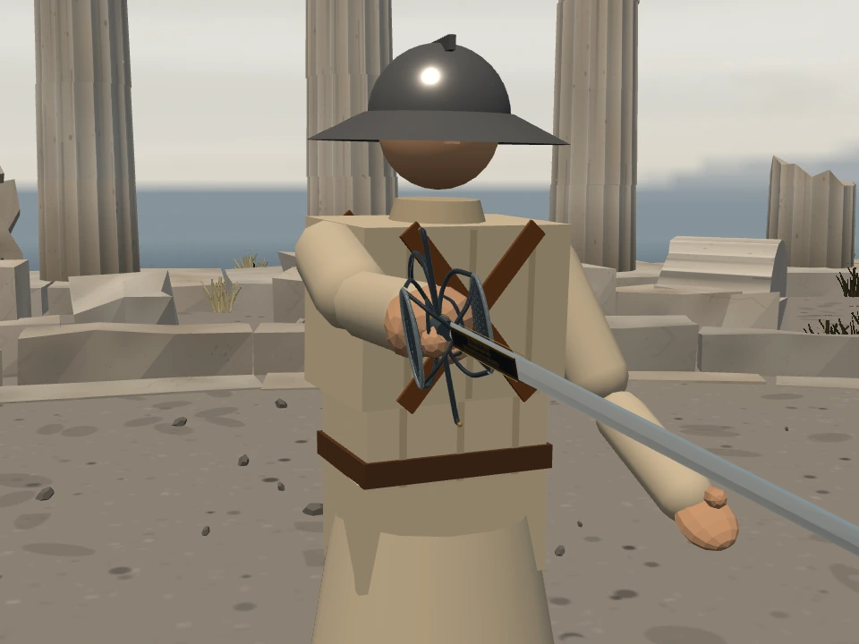
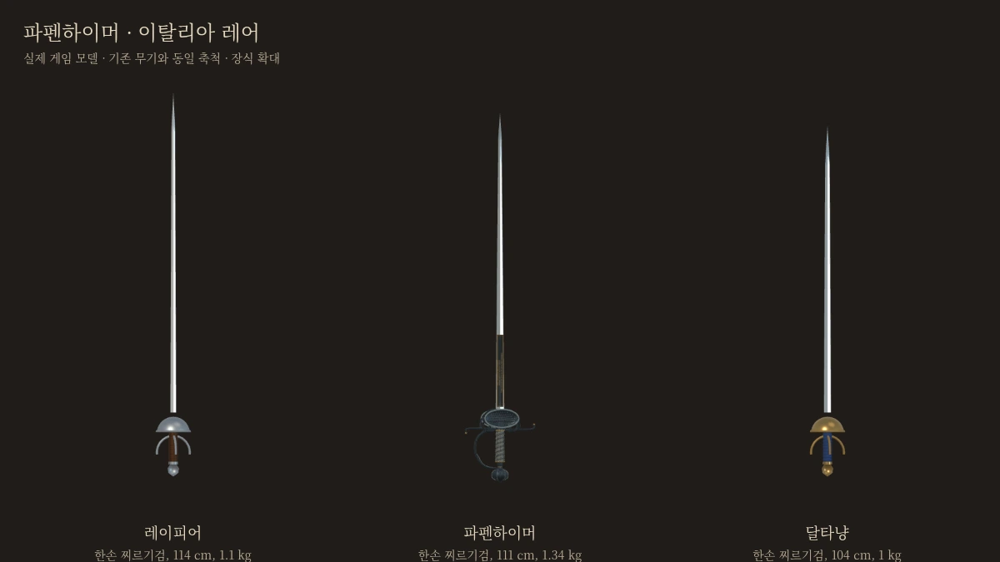
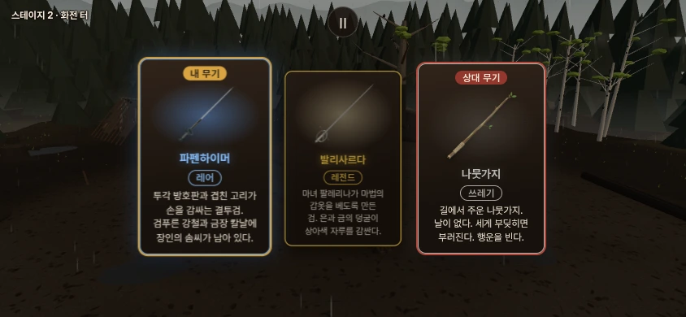

STILLNESS · 무기 제작 검토
파펜하이머
이탈리아 유파 · 레어 · 한손 찌르기검
겹친 고리와 투각 방호판으로 손을 감싸는, 묵직한 결투검입니다.
직접 휘둘러 보기
레이피어 상대와 대련
첫 링크의 상대는 나뭇가지를 든 브론입니다. 시작 화면의 전투 시작을 누르면 파펜하이머를 장착합니다.
전체 길이111.1 cm
칼날 길이89.2 cm
코등이 폭21.3 cm
무게1.34 kg

새 게임 모델을 직접 촬영한 확대 화면입니다. 사진을 누르면 원본 크기로 볼 수 있습니다.
실물을 기준으로 만든 형태
클리블랜드 미술관 소장품 1916.697을 기준으로 삼았습니다. 약 1620~30년 독일 솔링겐의 검이며, 길이와 무게는 박물관 공개 수치입니다. 게임에서는 이탈리아 검술로 사용합니다.
검푸른 강철, 금속선 감개, 홈이 팬 끝장식, 양면 금장 명문을 반영했습니다. 방호판의 구멍은 실제로 뚫려 있습니다. 세부 장식은 게임 크기에 맞춰 간략화했습니다.

기준 실물 · Cleveland Museum of Art, Gift of Mr. and Mrs. John L. Severance. Public Domain / CC0.
실제 게임 장착 모습 · 손과 방호구의 비례 확인.기존 검과의 차이
커먼 레이피어보다 날은 5.8cm 짧고, 무게는 240g 더 나갑니다. 넓은 방호구를 갖췄지만 무게와 관성의 부담도 있습니다. 기존 이탈리아 찌르기·막아찌르기 동작을 그대로 사용합니다.

동일한 축척과 조명으로 비교한 게임 모델.
투각 방호판과 겹친 고리가 손을 감싸는 결투검.
검푸른 강철과 금장 칼날에 장인의 솜씨가 남아 있다.

실제 게임 무기 카드 · 새 모델로 만든 섬네일.
조사·게임 수치·검증 기록
박물관 3곳의 소장품을 대조했습니다. 무게중심과 부품별 질량, 베기 0.60·찌르기 1.30·둔타 0.70은 게임용 추정값입니다. 레어 공통 계수가 적용되며 별도 마법 능력은 없습니다. 손 보호 충돌은 기존 물리 방식으로 근사합니다.
기존 32종 무기와 캐릭터 정의를 보존했으며 공통 검사 5종, 새 무기의 파손·기력·실제 모바일 터치 조작을 확인했습니다. 사람의 손맛과 최종 밸런스는 별도 판단이 필요합니다.
실물 자료·상세 설계·검증 원문